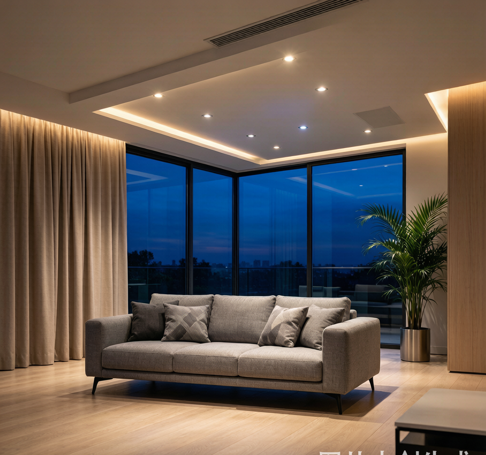
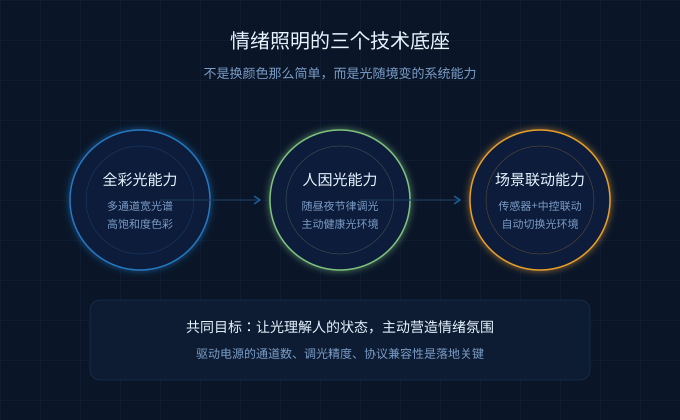
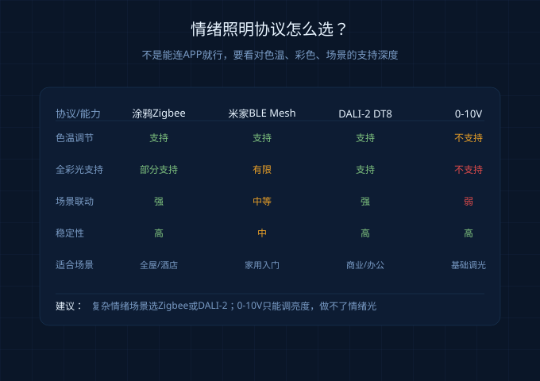
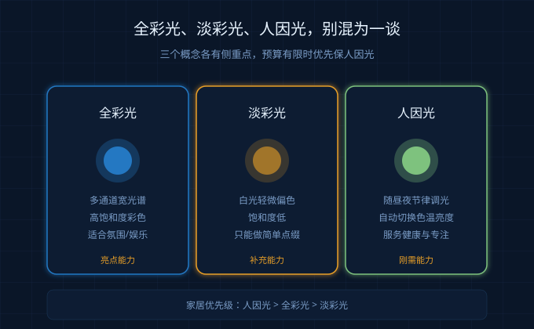

2026年逛一圈建博会和光亚展，最明显的感受是：照明行业不再只比亮度、比色温、比显色指数了。
展台上大家都在讲"情绪光""人因光""全彩光""主动健康"。观众问得最多的也不是"这灯多少瓦"，而是"这束光能不能让我放松""能不能帮我集中注意力""晚上会不会影响睡眠"。
这说明一件事：智能照明正在从"功能照明→健康照明→情绪照明"三级跳。
但很多做无主灯、筒射灯方案的朋友容易有一个误解：情绪照明不就是RGB灯带、氛围灯、电竞房光污染吗？跟我做的筒灯射灯有什么关系？
真相是，情绪照明的核心不是彩色，而是"光随境变"。筒射灯作为空间主照明，恰恰是最能承载情绪光的载体——前提是驱动电源要选对。
情绪照明到底是什么？别把它当成RGB灯带
简单理解，情绪照明就是让灯光根据人的状态、场景、时间自动变化，从而影响人的情绪和行为。
它不是简单的"把灯调成粉红色"。市面上很多所谓"情绪照明"产品，其实只是淡彩光：色域窄、颜色饱和度低、只能整灯统一变色，效果跟舞台灯差不多，看两周就腻。
真正专业的情绪照明需要三个能力：
- 全彩光能力：多通道宽光谱，能还原丰富、饱和、自然的色彩
- 人因光能力：根据昼夜节律自动调节亮度和色温，比如白天冷白光提神、晚上暖黄光助眠
- 场景联动能力：和传感器、窗帘、音响、智能中控联动，自动切换光环境

这三个能力里，前两个都高度依赖驱动电源。驱动做不好，灯珠再贵也出不来效果。
筒射灯做情绪照明，驱动电源必须看4个指标
筒射灯不像灯带那样容易换，装进去就是五年八年。驱动一旦选错，后期想调出好光几乎不可能。
1. 多通道独立输出：CCT要2路，RGBCW要5路
双色温筒射灯需要暖白和冷白两路独立恒流输出，驱动才能精确控制混光比例。如果两路共用一路PWM，色温就会飘，调出来的4000K可能偏黄也可能偏蓝。
想做全彩光，必须选支持RGBCW五通道的驱动：R、G、B、暖白、冷白各自独立。很多廉价驱动把冷暖白合并成一个通道，APP里只能调"白光亮度"，根本调不了色温。
2. 调光精度与低亮稳定性
情绪照明经常需要把灯调到5%、1%甚至更暗。低亮度下如果驱动电流不稳定，会出现两个致命问题：
- 频闪：PWM频率过低，手机摄像头能看到条纹，长时间看眼睛酸胀
- 跳变：从1%调到2%时亮度突然跳一档，没有平滑过渡
新国标GB/T 31831-2025对频闪有明确要求：Pst≤1.0、SVM≤1.8。选购时至少要看驱动是否标注符合该标准，调光深度是否能做到0.1%起步。
3. 协议兼容性：别只看能不能连APP
不同生态对情绪光的支持差异很大：
| 协议/生态 | 色温调节 | 全彩光支持 | 场景联动 | 适合场景 |
|---|---|---|---|---|
| 涂鸦Zigbee | 支持 | 部分支持 | 强 | 全屋智能、酒店 |
| 米家BLE Mesh | 支持 | 有限 | 中等 | 家用入门 |
| DALI-2 DT8 | 支持 | 支持 | 强 | 商业空间、办公 |
| 0-10V | 仅亮度 | 不支持 | 弱 | 基础调光 |

如果项目需要复杂的情绪场景编排，优先选涂鸦Zigbee或DALI-2，协议稳定、场景丰富。0-10V只能调亮度，做不了情绪光。
4. 散热与长期色漂
情绪照明意味着灯具会长时间低亮度运行，或者频繁切换颜色。驱动芯片在这种工况下反而更容易发热——因为开关损耗在低占空比时占比更高。
散热设计不好的驱动，用半年后容易出现：
- 色温漂移：原本3000K的暖光慢慢变黄
- 调光曲线变形：低亮度段越来越不线性
- 寿命缩短：电解电容在高温下快速老化
建议选有3C认证、明确标注工作温度和质保年限的驱动，不要只看初始价格便宜。
全彩光、淡彩光、人因光，别被概念绕晕
这三个词经常被混用，其实差别很大：
- 全彩光：多通道宽光谱，能输出高饱和度的红、绿、蓝等彩色，适合做氛围、娱乐、商业展示
- 淡彩光：在白色光基础上轻微偏色，颜色饱和度低，适合做基础氛围，但不适合做情绪主导
- 人因光：根据人体生物钟自动调节亮度和色温，核心是"合适的时间给合适的光"，不一定需要彩色

家居场景里，人因光是刚需，全彩光是亮点，淡彩光是补充。预算有限的话，先把双色温CCT做稳，能随时间自动切换色温，就已经超越90%的家庭了。
2026年情绪照明驱动选购清单
如果你是设计师、集成商或者正在装修，按这个清单选驱动基本不会翻车：
- 通道数：CCT至少2路独立，RGBCW至少5路
- 调光深度：0.1%-100%，低亮度不闪不跳
- 频闪指标：符合GB/T 31831-2025，Pst≤1.0
- 协议匹配：全屋智能选Zigbee/BLE Mesh，商业项目选DALI-2
- 认证与质保：3C认证+EMC认证，质保3年起
- 散热设计：明确标注工作温度范围，高温环境留20%功率余量
情绪照明听起来很虚，但落地很实在：它考验的不是灯具外观，而是驱动电源对光的控制能力。
一束能让人放松、专注、安心的光，背后一定有一颗稳定、精准、长寿的驱动。
常见问题
Q: 普通家庭有必要做全彩光吗？
A: 不是必须。如果预算有限，先把双色温CCT做稳，实现白天冷白、晚上暖黄的自动切换，体验已经很好。全彩光更适合影音室、电竞房、商业展示等需要氛围营造的场景。
Q: 情绪照明是不是一定很费电？
A: 不一定。人因照明反而会节能——人在需要专注时用高亮度冷白光，休息时用低亮度暖黄光，整体能耗可能比一盏大灯从头开到尾更低。关键看驱动效率和智能控制策略。
Q: 无主灯设计怎么搭配情绪照明？
A: 用筒灯/射灯做基础照明和重点照明，灯带做氛围补光，两者共用同一协议和智能中枢。避免不同品牌的灯各调各的，否则场景联动时色温不统一，反而显乱。
总结
- 2026年智能照明进入情绪照明阶段，光不再只照亮空间，还要影响人的状态
- 情绪照明的核心不是彩色，而是"光随境变"，筒射灯是最佳载体之一
- 驱动电源决定情绪光能否稳定输出，重点看通道数、调光精度、协议和散热
- 全彩光是亮点，人因光是刚需，淡彩光只能做补充
- 普通家庭优先做稳CCT双色温，比盲目追RGB更实用
如需技术支持或产品选型建议，请联系耐利普科技工程团队：138-2549-6855。